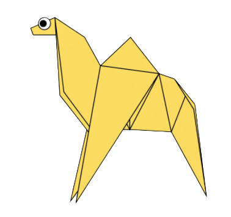
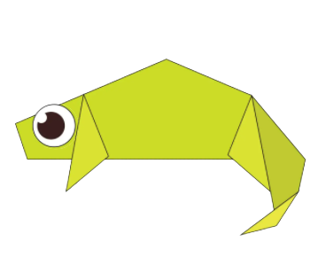
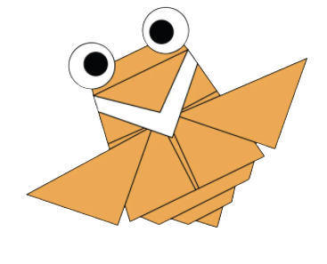
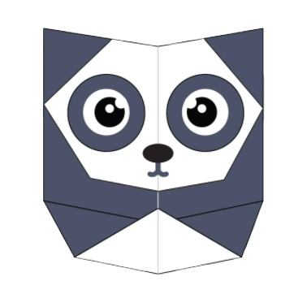
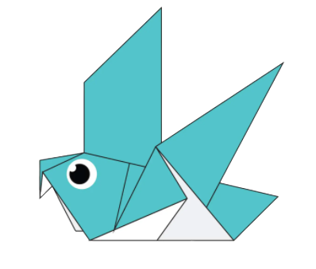
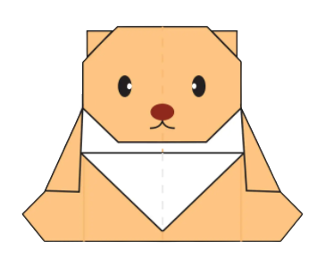
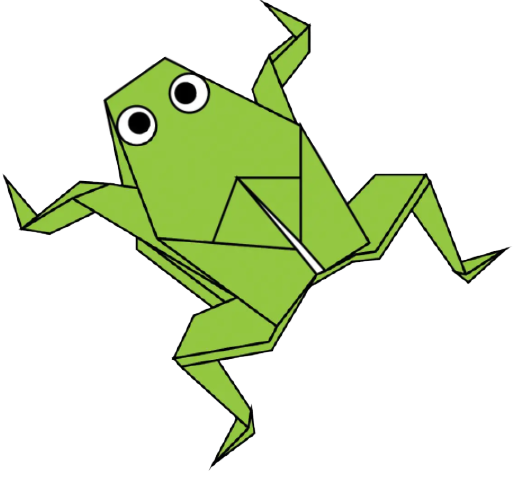
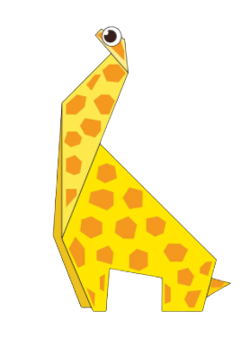
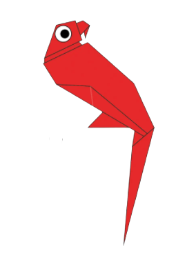
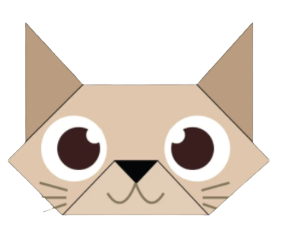

Camel
Interesting Facts about Camels:
- Camel's ears are furry.
- Camels can move easily across the sand because of its specially designed feet.
- When the find water, they will drink as much as possible.

Chameleon
Interesting Facts about Chameleons:
- Chemeleons are reptiles that are part of the iguana suborder.
- Changing skin color is an important part of communication among Chameleons.
- Most Chameleonshave a prehensile tail that they use to wrap around tree branches.

Cicada
Interesting Facts about Flying Cicadas:
- Cicadas can survive a huge fall as babies, or nymphs.
- Their predators, or animals that will eat them, don’t know they’re coming because of their size.
- They improve lawns by digging tunnels that allow air into the soil.

Panda
Interesting Facts about Pandas:
- Baby pandas are some of the smallest infant mammals.
- Most pandas protect and contain their movement to a range of roughly 2 square miles.
- Red Pandas are a nore distantly cousin of the giant Panda.

Pigeon
Interesting Facts about Pigeons:
- Pigeons are incredibly complex and intelligent animals.
- Pigeons are highly sociable animals.
- Pigeons are renowned for their outstanding navigational abilities.

Teddy Bear
Interesting Facts about Teddy Bears:
- The teddy was named after President Theodore Roosevelt.
- The bear develops children's imagination.
- The first bear was made by Margarete Steiff.

Frog
Interesting Facts about Frogs:
- Frogs absorb water through their skin so they don't need to drink.
- Frogs can lay as many as 4,000 eggs in frogspawn.
- Frogs have long back legs and webbed feet for jumping and swimming.

Giraffe
Interesting Facts about Giraffes:
- Giraffes only need to drink once every few days.
- Giraffes are the tallest mammals on Earth.
- Adult male giraffes tend to have 3 brains.

Parrot
Interesting Facts about Parrots:
- There are around 372 different parrot species.
- Parrots are believed to be one of the most intelligent bird species.
- Some Parrot species are known for imitating human voices.

Cat
Interesting Facts about Cats:
- Cats can rotate their ears 180 degrees.
- The average male weighs approximately 20 pounds.
- The hearing of an average cat is 5 times sharp than of a human adult.